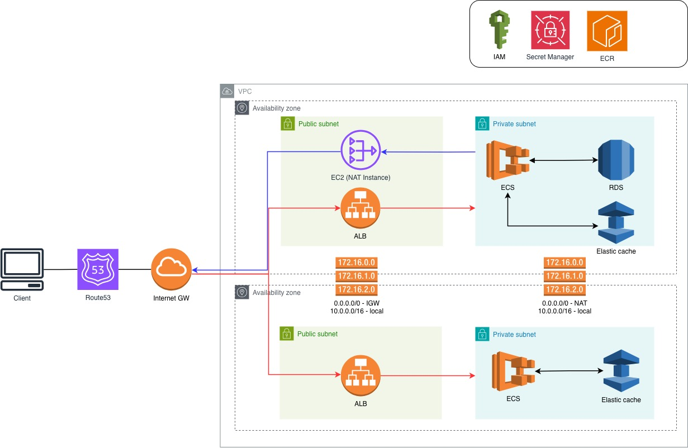

정재민
Software Developer
Contact
- Email: jaemin-jeong@naver.com
About Me
안녕하세요. 5년차 SW 개발자 정재민입니다. 조경학 전공 시절 그래픽 수업을 들으며 소프트웨어의 동작 원리에 호기심을 느꼈고, 이는 IT 업계로 진로를 바꾸는 계기가 되었습니다. 플랫폼 운영자로 커리어를 시작하면서 안정적인 운영에 대해 보람을 느꼈지만 직접 서비스를 만들어보고 싶다는 생각에 부트 캠프를 통해 공부하여 개발자가 되었습니다. 저는 서비스 속도를 최대 4배 개선하고, 수일이 걸리던 반복 업무를 자동화하는 등 문제를 찾아내고 해결하는 과정에서 큰 몰입감을 느끼며, '빠른 개발, 검증, 지속적인 개선'의 업무 스타일을 좋아합니다. 최근에는 개인 프로젝트를 통해 프론트엔드와 인프라 영역까지 확장하며 풀스택 역량을 키워가고 있습니다. 역할의 경계를 넘어, 서비스 개발의 전 과정을 주도적으로 이끄는 엔지니어로 성장하는 걸 목표로 합니다.
Tech Stack
Language
Python, JavaScript, TypeScript
Framework
Django, Django Ninja, Node.js, Express.js, FastAPI, React
Database
MySQL, Postgresql
Etc
Docker, Redis, Bigquery, AWS(ECS, EC2, RDS...), Looker Studio, Git
Certifications/Education/Awards
Certifications
- (2026.06) SQL개발자(SQLD) / 한국데이터산업진흥원
- (2018.06) 리눅스마스터 2급 / 한국정보통신진흥협회
- (2018.05) 정보처리기사 / 한국산업인력공단(HRD Korea)
- (2016.12) 컴퓨터그래픽기능사 / 한국산업인력공단(HRD Korea)
Education
- (2020.05) 코드스테이츠 Javascript 웹 개발 과정 수료
- (2018.07) KH정보교육원 정보보호 및 네트워크 보안 관리자 양성과정 교육 수료
- (2018.02) 가천대학교 조경학과 졸업
Awards
- (2016.06) 누리공간 만들기 프로젝트 대상 / 서울특별시
Career
2023.09 - 2025.12
QR오더 백엔드 개발
2020.09 - 2022.12
2018.08 - 2019.11
Redis 기반 네이버 플랫폼(nBase-ARC) 운영
Projects
QR 오더
1. 간편 리뷰 기능 개발
목표
- 네이버 스마트플레이스 연동을 통해 리뷰 단계 간소화
- 백엔드 구조 설계, REST API 개발
- 네이버 스마트플레이스 API 연동
- 리뷰 상태 추적을 위한 모델 설계
- 리뷰 작성, 상태 업데이트에 필요한 REST API 개발
- Celery 기반의 스케줄러 구축, 리뷰 상태를 동기화하는 배치 프로세스 구현
- API 명세, 통신 플로우 등 기술 문서화를 통해 협업 효율 개선
- 리뷰 참여율 약 15% 상승
- 영수증 인증 없이 리뷰할 수 있어 편의성 향상
- 기술 문서 제공으로 신규 팀원 온보딩 리소스 절감
- Python, Django, MySQL, Celery, AWS, Confluence
2. 외부 POS 솔루션과 QR오더 연동
목표
- 대형 프랜차이즈 대상으로 QR 오더 도입률 확대
- 외부 POS 파트너사와 협업, 개발 주도
- 매장정보 관리 및 주문 관련 REST API 연동 개발
- 서비스 안정성 확보를 위해 Django test를 활용한 테스트코드 작성
- 외부 개발팀의 QR오더 서비스 이해도를 높이기 위해 QA 시나리오 작성, QA 지원
- 이삭토스트 약 800개 매장에 QR 오더 서비스 성공적 제공
- Python, Django, MySQL, AWS, Confluence
3. 대전 한화이글스 홈구장에 QR오더 제공
목표
- 약 17,000명 규모 관중 환경에서 안정적인 QR 오더 서비스 제공
- 신규 기능 개발 및 성능 최적화
- 부하 테스트 및 운영 안정성 검증
- 야구장 전용 매장 모델 설계
- 신규 기능 REST API 개발
- 조회 빈도가 높은 데이터에 Redis 캐싱 전략을 도입, 부하 경감 및 응답 속도 개선
- k6 기반 부하 테스트를 통해 시스템 병목 구간 식별, 인프라 가용성 검증
- CloudWatch를 통한 모니터링
- 전석 매진 및 피크 타임 상황에서도 안정적 서비스 운영
- Python, Django, MySQL, Redis, ElastiCache, AWS, k6
4. 통합 관리시스템과 QR오더 서비스 연동
목표
- QR오더 매장 설정 기능을 통합 관리시스템에 이관하여 데이터 일관성 확보
- 정산 정보 등록 업무를 자동화하여 운영 효율화
- 통합 시스템 연동에 필요한 API 개발 및 모델 설계
- 협업에 필요한 커뮤니케이션 주도
- REST API 연동 및 개발
- 대리점 및 다양한 계약 형태를 지원하는 모델 설계
- 매장 정보 변경 이력 추적을 위한 전용 이력 관리 모델 설계
- 결제 수단 미등록 등 장애 유발 요소를 파악하기 위해, Celery 기반 스케줄러로 Slack 알람 전송하는 데일리 리포트 시스템 구축
- 다중 트랜잭션 상황에서 발생하는 동시성 문제 파악 및 버그 수정
- 매장 설정 기능을 대리점에 셀프 서비스 형태로 제공
- 운영팀 수동 업무 절감
- Python, Django, MySQL, Celery, AWS, Slack
5. 통계 지표 대시보드 구축 (BigQuery & Looker Studio)
목표
- 주문, 결제 등 핵심 지표 가시화하여 영업팀에 제공
- 다양한 데이터 소스를 기반으로 QR오더를 통한 매출 및 주문 현황, QR오더 마케팅 성과 대시보드 구현
- BigQuery, MySQL, Google Sheets에서 데이터 추출
- Google Looker Studio를 통해 매장 매출, 마케팅 성과 대시보드 구축
- 매일 아침 주요 지표를 요약하여 Slack으로 전송하는 서버리스 아키텍처 구축
- QR 오더 매출 점유율을 가시화하여 QR 오더 서비스 활용성 검증
- 수동 데이터 추출 업무를 없애 개발팀의 리소스 절감
- BigQuery, MySQL, AWS EventBridge Scheduler, AWS Lambda, Google Looker Studio, Slack
6. QR오더 주문 기능 개발
목표
- QR 오더 서비스에 주문 기능을 추가해 서비스 고도화
- 주문 데이터를 중계 서버로 전송하는 로직 개발
- 멤버십 솔루션 연동 및 관련 모델 설계
- 부가세, 봉사료, 포인트 할인이 복합적으로 작용하는 결제 금액에 대한 정확성 확보
- POS 연동 규격에 맞춰 부가세, 봉사료, 포인트 차감 등 다양한 케이스에 대한 계산 로직 구현
- 멤버십 솔루션 연동을 통한 포인트 조회, 적립, 사용 기능 구현
- 멤버십 적립/사용의 중복 방지를 위한 모델 설계
- TypeDict를 통해 복잡한 주문 데이터 클래스화하여 코드 가독성 향상
- 코드 안정성을 확보하기 위해 Django test를 통해 테스트 코드 작성
- QR 오더를 통한 주문 및 멤버십 기능 릴리즈
- Python, Django, MySQL, AWS
7. 데이터 전송 자동화 프로세스 구축
목표
- 수작업 없이 정기적으로 그룹사에 데이터 제공
- 인프라 관리 부담을 최소화한 서버리스 기반의 데이터 수집/전송 파이프라인 설계 및 구축
- AWS Lambda에서 가맹점 데이터(MySQL) 추출, 파일 변환 및 이메일 발송까지 수행하는 로직 개발
- 데이터 유실 방지 및 이력 관리를 위해 AWS S3를 사용해 백업 체계 구축
- AWS EventBridge Scheduler를 통해 정기 배치 처리
- 배치 작업 성공 여부를 Slack 알림으로 연동하여 실시간 모니터링 환경 구현
- 데이터 수집 및 전송 업무 100% 자동화
- Python, MySQL, Slack, AWS
앳트래커
1. 인보이스 및 세금계산서 발행 자동화
목표
- 이용료 정산 및 세금계산서 발행 프로세스 전면 자동화
- 이용료 정산 및 세금계산서 발행 로직 개발
- 정산 관리 기능 백오피스 풀스택 개발
- 정산 DB 테이블 설계 및 Stored Procedure 개발
- MySQL Event Scheduler를 통해 정산 주기별 자동 결산 및 인보이스 데이터 생성
- 외부 API(팝빌, Mailchimp) 연동, 세금계산서 및 인보이스 이메일 발송 자동화
- 백오피스 정산 관리 페이지 개발, 정산 내역 조회/관리 기능 제공
- 자동화를 통해 휴먼 에러에 의한 오계산 및 누락 위험 차단
- 수일이 소요되던 운영팀의 반복 업무를 없애 운영 리소스 절감
- Node.js, Express.js, React, MySQL, AWS
2. Redis 기반 대용량 데이터 조회 성능 최적화
목표
- 대규모 데이터 조회 시 발생하는 응답 지연 문제를 해결하여 사용자 경험 개선
- 캐시 대상 선정 및 Redis 캐시 적용, 성능 검증 수행
- DB Slow Query 분석 및 개선
- 로그 및 EXPLAIN 실행 계획을 분석해 캐시 적용 대상 선정
- IDE, 로그, 개발자 도구를 통해 개선된 쿼리 및 캐시 성능 검증
- 배포 후 변경된 내용이 반영되지 않는 이슈 해결
- 최대 12초 걸리던 로딩 속도를 1초 미만으로 약 90% 이상 단축
- Node.js, Redis, MySQL, AWS
3. 메신저 기반 매출 지표 조회 봇 개발
목표
- 업무용 메신저로 간단히 매출 조회할 수 있게 하는 기능을 고객사(카페 노티드)에 제공
- 매출 집계 로직 개발
- 메신저 인터페이스와 백엔드 API 연동
- 매장별, 지점별 매출 데이터를 실시간으로 집계하고 요약하여 메신저 포맷에 맞게 최적화하는 API 개발
- 업무용 메신저(Jandi) Webhook 연동
- 메신저를 통해 매출 분석 데이터를 실시간으로 확인함으로서 편의성 향상
- Node.js, Redis, MySQL, AWS
4. 분석 데이터 이상치 감지 프로세스 구축
목표
- 통계 및 분석 신뢰도를 저해하는 이상 데이터를 식별, 데이터 무결성 확보
- 데이터 오염 방지를 위한 이상치 탐지 로직 설계 및 관리 시스템 구축
- 비즈니스 도메인 규칙을 기반으로 주문 누락, 중복 결제, 비정상적 수치 등 이상치 탐지 기준 수립
- 수십만 건의 분석 데이터를 기준으로 이상 데이터 식별
- 이상 데이터를 전용 관리 테이블로 수집하는 스케줄러 구현
- 이상 데이터 수집을 통해 분석 로직 개선에 필요한 정보 제공
- MySQL
5. 슬로우 쿼리 개선, 인덱싱 튜닝을 통한 성능 향상
목표
- 서비스 지연을 유발하는 슬로우 쿼리를 튜닝해 API 응답 성능 향상
- 슬로우 쿼리 대상 튜닝, 인덱스 최적화
- 실행 시간이 1,000ms를 초과하는 쿼리 대상으로 MySQL EXPLAIN 실행 계획을 통해 원인 분석
- 성능 개선 효과 검증, 데이터 정합성 점검
- 쿼리 실행 속도를 최적화, 기존 대비 최대 4배 빠른 응답 속도 구현
- MySQL
6. 이메일 및 카카오 알림톡 통합 메시징 시스템 구축
목표
- 사용자 행동 기반의 알림 체계를 구축하여 고객 접점 강화
- 메시징 솔루션 연동
- 회원가입 등의 이벤트 발생시 사용자에게 이메일/알림톡 발송 로직 개발
- 메시징 솔루션(Mailchimp, 카카오 알림톡) 연동
- 회원가입/매장정보 등록 등, 주요 이벤트 발생 시 사용자에게 알림 발송하는 로직 개발
- 백오피스 개발, 수신자 관리 및 발송 이력 모니터링 기능 제공
- 서비스 주요 시점별 자동 알림 프로세스 구축으로 사용자의 서비스 몰입도 향상
- 백오피스 기능을 통해 수신자 관리 및 발송 결과 확인 업무 공수 절감
- Node.js, Express.js, React, MySQL, AWS
7. ELK 기반 공공데이터 결합 및 비즈니스 대시보드 구축
목표
- 내부 데이터와 공공데이터를 결합해 다각도의 비즈니스 인사이트 제공
- ELK 스택 인프라 구축 및 외부 데이터 수집 파이프라인 설계
- AWS EC2환경에서 ELK(Elasticsearch, Logstash, Kibana) docker 클러스터 구축
- 비즈니스 지표에 필요한 공공데이터(서울시 자치구별 연령/성별 인구수 및 1인 가구 비중 등) 선정
- Logstash를 통해 공공데이터 수집/가공, Elasticsearch에 적재하는 파이프라인 구축
- Kibana를 통해 상권 분석 대시보드 구현
- 상권 맞춤형 메뉴 컨설팅을 위한 객관적 데이터 근거 마련
- ELK(Elasticsearch, Logstash, Kibana), Docker, AWS
Side projects
[Warning!] AWS 비용 문제로 인해 평일 오전 8시 ~ 오후 9시 사이에만 접속이 가능합니다.
설명
- 토픽들을 마인드맵 형태로 정리할 수 있도록 하고, 필요시 AI 에이전트를 사용해 내용을 보강할 수 있습니다.
-
예전에 자격증 공부를 할 때 마인드맵 프로그램을 사용한 적이 있었습니다.
당시 모르는 부분은 GPT의 도움을 받아 내용을 보강하며 공부했는데, 불편했던 점은 마인드맵 화면과 GPT 화면을 왔다갔다 해야 한다는 점이었습니다.
이러한 불편함을 해소하고자, 하나의 화면에서 마인드 맵 작성과 AI를 사용할 수 있는 도구를 개발하게 되었습니다.
- Backend: Python, FastAPI
- DB: Postgresql
- Frontend: Typescript, Next.js, ReactFlow, tailwind css
- Infra: AWS (ECS, RDS, ECR, SecretManager)
- Etc: Docker, Gemini open API, Google analytics
-
AWS 인프라 예상 비용이 200달러 이상 나올 것이라는 리포트를 보고 비용을 절약해야겠다 생각했습니다.
서버는 Fargate ECS로 구축되어있는 상황이었으며, 특정 시간대에는 task를 내리자고 판단했습니다.
GA를 통해 시간대별 트래픽을 확인해보니 평일 오전과 저녁시간대에 접속이 발생하는 상황이었고,
이를 기준으로 ECS auto scaling의 scheduled action을 사용해 평일 오후 9시 이후부터 오전 8시 이전까지 task를 내리도록 설정했습니다.
이 작업을 통해 기존 대비 ECS 비용이 약 50% 절감되었습니다.
[Warning!] AWS 비용 문제로 인해 평일 오전 8시 ~ 오후 9시 사이에만 접속이 가능합니다.
설명
- 로또를 구매할 때 더 재미있는 경험을 하기 위해 만든 서비스입니다.
- 로또 번호를 추천받을 수 있으며, 편의성을 위해 동행복권 사이트 바로가기 기능을 추가했습니다.
- 회차별로 추천 성공률을 확인할 수 있습니다.
-
인프라 구축부터 풀스택 개발 및 배포까지, 서비스 개발에 필요한 모든 부분을 혼자서 다뤄보고 싶었습니다.
빠른 시간내에 모든 경험을 해보기 위해 최대한 단순한 서비스를 만들기로 했고,
프로젝트 아이템을 고민하던 중 회사 동료와 종종 로또를 구매했던 기억이 나서 로또번호 추천 서비스를 개발하게 되었습니다.
- Backend: Python, Django
- DB, Cache: Postgresql, Redis
- Frontend: Typescript, Next.js
- Infra: AWS (ECS, EC2, RDS, ElasticCache, SecretManager, ECR, Route53, VPC)
- Etc: Docker, 동행복권 API, Google analytics

- 서비스 배포 후 '추천 성공률 조회' 페이지가 정상적으로 표시되지 않는 현상이 발생했습니다. 해당 페이지에서는 레디스에 저장된 회차별 당첨 번호를 조회하여 화면에 표시하는데, 캐시 서버 내 데이터가 저장되지 않아 발생된 문제였습니다. AWS 블로그를 참고하여 AWS ElasticCache Serverless 버전은 TLS 연결이 필요하다는 정보를 확인했고 이를 적용한 후 문제를 해결했습니다. 이러한 문제를 사전에 발견하지 못한 이유는 TLS 연결이 필요 없는 로컬에서만 테스트하고 바로 운영 배포를 했기 때문이었고, 현업에서 운영 환경 배포 전 개발 환경 배포가 꼭 먼저 이뤄져야 하는 이유에 대해 상기할 수 있었습니다.